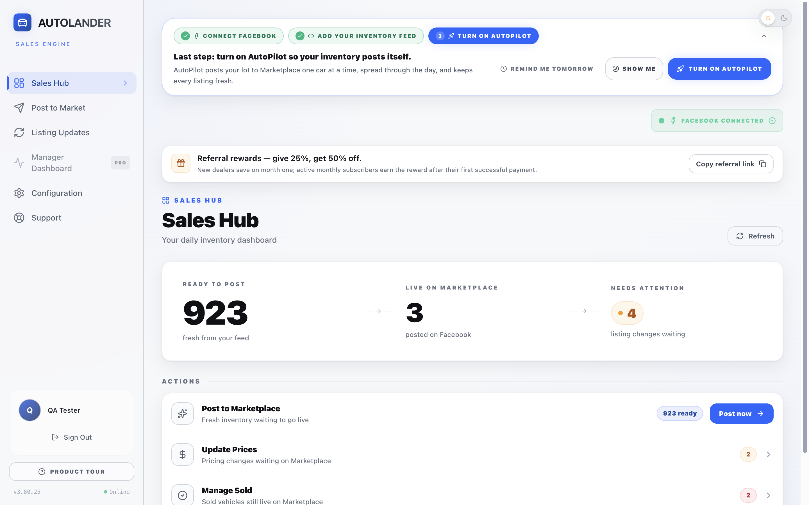

Get comfortable. Get to work.
Find the right screen, post intentionally, follow the result and keep your daily routine clear.
Open the rep success guide →YOUR NEXT STEP, MADE CLEAR
See how AutoLander works. Learn one task at a time. Find the answer you need without starting over.
New to AutoLander? Start with the demo. Already using it? Choose your role below.

CHOOSE YOUR ROUTE
A manual for fast answers. A workbook for practice. A course you can revisit by task.
Find the right screen, post intentionally, follow the result and keep your daily routine clear.
Open the rep success guide →Own inventory setup, team access and listing standards. Check what your team can do, not just what they watched.
Open the manager success guide →A SIMPLE WAY TO LEARN
Use the 18-lesson course to see the full screen, click locations and expected result.
Use the matching workbook task. Stop before an action that would post, delete, buy or change access unless it is real intended work.
Record Independent, Needs coaching, Blocked by setup/access or Not my role. Watching a video does not award a pass.
Search 43 manual tasks by screen or symptom. Jump back to the relevant lesson when you need a demonstration.
Open any lesson, manual or workbook directly from this page. No ZIP download or course login is required.
Save a personal copy of a workbook, use a PDF app that supports form fields, then reopen your saved copy to confirm your entries. Do not enter passwords or private buyer messages.
See the course map and workbook pages →Open the searchable manual, choose your role and type the screen name or symptom—such as connection, Queue, credits or missing vehicle.
Course progress is stored only in this browser where available. It is not a shared manager dashboard, account record or automatic certificate.
Open Quick help →